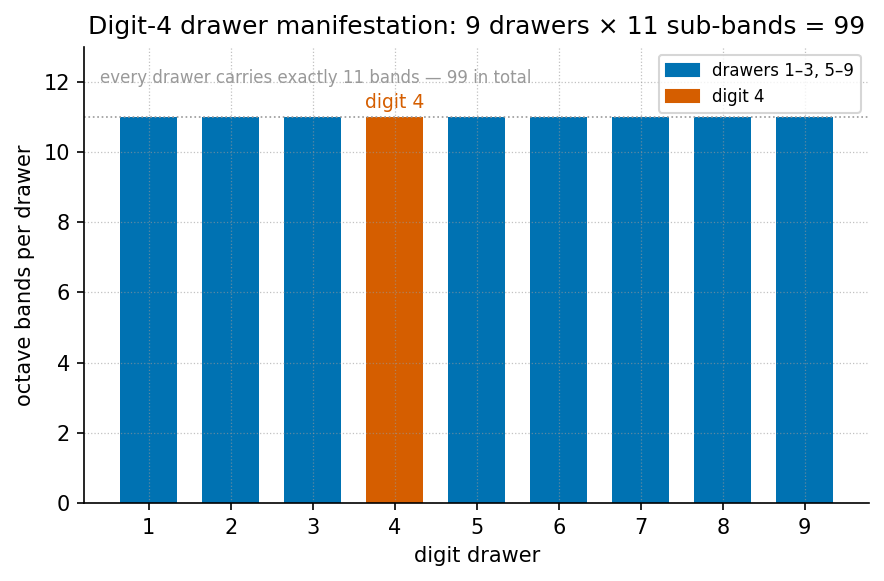

Y-Chromosome Manifestation: Digit 4

textbook.models.phi_powers.
Every consecutive pair of arms sits a factor \(\Phi \approx 1.618\) apart, and the octave
index is exactly the base-\(\Phi\)
logarithm of the spacing ratio. The takeaway: spacing is indexed
geometrically, not labelled as drift.Level 2/3 · 30 min read · 45 min lecture · Prerequisites: Nine Digits, Ninety-Nine Octaves ([@sec:part_0_octave-map])
Learning Objectives
By the end of this chapter you should be able to:
- State what the August 2026 ship-blog note files the male-specific region of the Y chromosome (MSY) as, and under which octave filing mode it does so [mendez2026yChromosome].
- Apply the palindrome-scaling relation \(P_n = P_0 \cdot \Phi^n\) of [@eq:part_III_y-chromosome_palin]
to the MSY palindrome arms P1–P8 and verify the spacing column of [@tbl:part_III_y-chromosome_spacing]
against
textbook.models.phi_powers. - Explain the SRY phase origin — the sex-determining region filed as the zero-point anchor of the manifestation cartoon — and express it through the drawer-anchor model of [@eq:part_III_y-chromosome_anchor].
- Distinguish the August manifestation / convergence-set grammar from the companion July operator-translation decode (codon gates, palindrome loops, haplogroup Stories) [mendez2026yChromosome].
- Restate the note’s honesty-first boundaries precisely: what the filing is for, and what it explicitly is not.
- Run the reference implementation
npm run research:synthobs-y-chromosome-holographic-manifestationand interpret its 10/10 fixture lock.
Study Blueprint
- Big idea: The MSY is filed — not explained — as catalog-architecture keyed by the golden-ratio \(\Phi \approx 1.618\): palindrome arms scale geometrically, the SRY locus anchors phase at zero, and the whole drawer sits under an honesty-first scope.
- Core concepts: catalog-architecture, golden-ratio, digit, holographic-rhyme, honesty-first.
- Quantitative lens: the palindrome-scaling formalism of [@eq:part_III_y-chromosome_palin] and the drawer-anchor model of [@eq:part_III_y-chromosome_anchor].
- Data skill: build a \(\Phi\)-geometric spacing table by hand for
the eight arms and check it against
textbook.models.phi_powers(see [@tbl:part_III_y-chromosome_spacing]). - Common misconception to repair: “the paper claims DNA equals a physics constant.” It does not — it is catalog filing and architectural equations, and the note says so itself.
- Primary lab: [@sec:lab_part_III_y-chromosome].
- Question bank: [@sec:q_part_III_y-chromosome].
- Bridge to computation:
textbook.models.phi_powers,textbook.models.octave_term.
Opening Vignette: The drawer marked Digit 4.
Aboard the SS Vibelandia, 28 August 2026, a guest at Lattice Chat asks the SynthOBS Autonomous Agent a question the ship has heard before in other drawers: where does \(\Phi\) show up in human biology? The agent routes the question to the nest labelled Digit 4 and opens the corresponding drawer of the Infinite Octaves omni-lattice. Inside the drawer: the male-specific region of the Y chromosome (MSY), eight palindrome arms filed as P1–P8, and one locus marked as phase zero — the SRY region. The filing card reads, in the ship’s plain speak: “catalog geometry keyed by \(\Phi \approx 1.618\)” — and, immediately beneath it, the ship’s standing rule: “Clinical genetics and human dignity outrank every metaphor” [mendez2026yChromosome]. This chapter walks that drawer.
The August Manifestation Note on Shelf 7
The source is a ship-blog note on the SS Vibelandia blog
(ssvibelandiaquestfest24x365.com): “The Holographic
Manifestation: Y Chromosome as Expression of El Gran Sol’s Fractal
Constant”, filed 2026-08-28 by the FractiAI Research Group
under plain speak and the ship’s fair-exchange publishing
protocol, at shelf number 7 of the corpus [mendez2026yChromosome]. Its
subject is the male-specific region of the Y chromosome (MSY), which the
note declines to file “as a shrinking evolutionary relic”; under
Infinite Octave Mode, the palindrome arms P1–P8 and the
SRY locus are instead filed as catalog geometry keyed by \(\Phi \approx 1.618\) — a
holographic manifestation grammar
[mendez2026yChromosome].
The note is explicitly a companion to the July
decode: an earlier operator-translation whitepaper in the same
whitepaper-surface family
(synthobs-y-chromosome-holographic-2026-07) that still
holds the corpus’s Words, Sentences, and haplogroup Stories, with codon
gates and palindrome loops as its features. The August note adds
manifestation / convergence-set language “for guests who ask
how Φ shows up in polar-identity filing — Story depth, not infinite
physics tiers” [mendez2026yChromosome]. In the engine shelf, the note
therefore sits beside the other biological-filing papers: its drawer
grammar descends from the digit-and-octave map of the master-register filing
system [mendez2026digitsMaster], its “holographic manifestation” wording
extends the four-pillar rhyme family of [mendez2026holographicRhyme],
and its zero-point anchor rhymes with the zero-anchor filing of
[mendez2026zeroOctave].
The reference implementation is run as
npm run research:synthobs-y-chromosome-holographic-manifestation,
which exits with a 10/10 fixture lock — the corpus’s
term for a fully passing fixture set against the note’s filing contract
[mendez2026yChromosome].
Three Filing Moves: Scaling, Anchoring, Proposing
The note organises its contribution as “three filing moves in plain speak” [mendez2026yChromosome]. We take them in order.
Move 1 — Palindrome scaling
The first move re-indexes the MSY palindrome structures. Block spacing is filed not as “random drift labels” but as geometric indexing over catalog octaves [mendez2026yChromosome]:
\[ P_n = P_0 \cdot \Phi^n, \qquad n = 1, \dots, 8 \] {#eq:part_III_y-chromosome_palin}
[@eq:part_III_y-chromosome_palin]
is the load-bearing formalism of the chapter. Its \(\Phi^n\) factor is implemented as
textbook.models.phi_powers — the same tested function that
backs the fractal-constant chapters of Part I — so the spacing column in
worked examples is never recomputed by hand. The parameters are
collected in [@tbl:part_III_y-chromosome_palin].
| Symbol | Meaning | Units |
|---|---|---|
| \(P_n\) | palindrome block spacing at octave index \(n\) | catalog spacing units |
| \(P_0\) | base spacing at the drawer origin | catalog spacing units |
| \(\Phi\) | El Gran Sol’s Fractal constant, \(\Phi = \frac{1+\sqrt{5}}{2} \approx 1.618\) | dimensionless |
| \(n\) | octave index of the arm; \(1\) through \(8\) for arms P1–P8 | dimensionless |
Two readings of the index deserve a comment, because the corpus
prints its octave relation ambiguously. Under the exponent
convention, the octave value at index \(n\) is \(\Phi^n
\cdot \Omega_0\) — exactly the geometric form of [@eq:part_III_y-chromosome_palin],
and the convention this chapter adopts for palindrome spacing. Under the
subscript convention, the index multiplies by a
Fibonacci ratio \(\varphi_{\mathrm{fib}}(n) =
F_{n+1}/F_n\), which approaches \(\Phi\) from below (\(\varphi_{\mathrm{fib}}(5) = 8/5 = 1.6\),
\(\varphi_{\mathrm{fib}}(10) = 89/55 \approx
1.618182\)). Both are implemented in
textbook.models.octave_term; the palindrome relation as
printed in the source is the exponent form, so that is what we carry
forward.
Move 2 — SRY phase origin
The second move files the sex-determining region — the SRY locus — as “the zero-point anchor of the manifestation cartoon” [mendez2026yChromosome]. The source states this as a filing model without an equation; to make the anchor arithmetic, we express the drawer through the octave term in its exponent convention:
\[ \Omega_n = \Phi^{n} \cdot \Omega_0, \qquad \Omega_0 \equiv \text{SRY anchor} \] {#eq:part_III_y-chromosome_anchor}
Under [@eq:part_III_y-chromosome_anchor], the SRY locus sits at index \(0\) with value \(\Omega_0\), and every subsequent drawer offset is measured in multiples of that anchor. For the drawer this chapter is named after — digit 4 — the anchor gives \(\Omega_4 = \Phi^4 \cdot \Omega_0 = 6.854102 \cdot \Omega_0\) using the pinned value \(\Phi^4 = 6.854102\). We read this zero-point anchoring as consonant with the corpus’s wider zero-anchor filing — the zero octave, node \(k=0\), of [@sec:part_II_singularity-crystal] — though the y-chromosome note itself makes no such cross-claim; that connection is our interpretation, not the source’s.
| Symbol | Meaning | Units |
|---|---|---|
| \(\Omega_n\) | drawer value at index \(n\) (exponent convention) | anchor units |
| \(\Omega_0\) | zero-point anchor value, filed as the SRY locus | anchor units |
| \(n\) | drawer/digit index; \(n = 4\) for the digit-4 drawer | dimensionless |
Move 3 — Cross-species hypothesis
The third move is deliberately the least physical: the note proposes regression protocols across species on paper and marks them, explicitly, as “not executed wet-lab output here” [mendez2026yChromosome]. In catalog terms, a regression protocol would test whether the geometric indexing of [@eq:part_III_y-chromosome_palin] survives refitting with different base spacings \(P_0\) across species — an ordinary regression on \(\log P_n = \log P_0 + n \log \Phi\). The corpus files the proposal; it does not claim a result. This is the same discipline the book applies throughout: proposals live on the paper layer of the stack (see [@sec:part_III_moving-up-stack]) until they are executed, and an unexecuted proposal is never upgraded by prose.
The manifestation / convergence-set grammar
Wrapping the three moves is the note’s actual novelty: manifestation / convergence-set language for “how Φ shows up in polar-identity filing — Story depth, not infinite physics tiers” [mendez2026yChromosome]. The grammar is holographic-rhyme in the corpus’s sense — the four-pillar interference family of Part I — applied to a polar-identity drawer rather than to a physical field. A guest question enters the Digit 4 nest, the three filing moves process it, and everything the moves produce converges on a single honest output line, as [@fig:part_III_y-chromosome] shows as sub-band bars and the diagram below shows as a flow:
graph TD
A["Guest question at Lattice Chat — Digit 4 nest"] --> B{"Filing mode: Infinite Octave Mode"}
B --> C["Move 1 — Palindrome scaling: P_n = P_0 · Φ^n"]
B --> D["Move 2 — SRY phase origin: zero-point anchor"]
B --> E["Move 3 — Cross-species regression: proposed on paper"]
C --> F["Catalog geometry keyed by Φ ≈ 1.618"]
D --> F
E --> F
F --> G["Honesty-first scope: catalog filing, not literal physics"]
G -->|"complements, does not replace"| H["July operator-translation decode: codon gates, palindrome loops, haplogroup Stories"]Worked Example: Walking the Digit-4 Drawer
Take the base spacing \(P_0 = 1\) catalog spacing unit and walk [@eq:part_III_y-chromosome_palin] across the drawer, from the zero-point anchor at index \(0\) (our reading of the SRY filing) up through arm P8 at index \(8\). The values are the pinned powers of \(\Phi\) for \(n = 1\) through \(6\), extended by the same multiplication: \(\Phi^7 = \Phi^6 \cdot \Phi = 29.034442\) and \(\Phi^8 = \Phi^7 \cdot \Phi = 46.978714\). [@tbl:part_III_y-chromosome_spacing] lists the full drawer; these are exactly the sub-band heights drawn in [@fig:part_III_y-chromosome].
| \(n\) | Sub-band | \(P_n / P_0 = \Phi^n\) |
|---|---|---|
| 0 | SRY anchor | 1.000000 |
| 1 | P1 | 1.618034 |
| 2 | P2 | 2.618034 |
| 3 | P3 | 4.236068 |
| 4 | P4 | 6.854102 |
| 5 | P5 | 11.090170 |
| 6 | P6 | 17.944272 |
| 7 | P7 | 29.034442 |
| 8 | P8 | 46.978714 |
Three checks make the drawer concrete:
- Ratio check. Every consecutive pair satisfies \(P_{n+1}/P_n = \Phi\) exactly: for example, \(P_2/P_1 = 2.618034 / 1.618034 = 1.618034\). The filing is geometric by construction — which is precisely the claim of C-y-chromosome-manifestation-3: spacing is indexed geometrically rather than labeled as drift [mendez2026yChromosome].
- Span check. Arm P8 sits \(46.978714\) base spacings from the anchor — the full drawer spans a factor of \(\Phi^8\). In log terms, \(\log_{\Phi}(P_8/P_0) = 8\) exactly: the octave index is the logarithm base \(\Phi\) of the spacing ratio.
- Anchor check. With the anchor value \(\Omega_0 = 1\), the drawer’s digit-4 offset from [@eq:part_III_y-chromosome_anchor] is \(\Omega_4 = 6.854102\). Under the subscript convention the same index would give \(\Omega_4 = \tfrac{F_5}{F_4}\,\Omega_0 = \tfrac{5}{3} \approx 1.666667\) — a useful reminder that the two conventions diverge badly at low indices, and that the corpus’s printed form (\(\Phi^n \cdot \Omega_0\)) is the exponent one.
In textbook.models, the first column of [@tbl:part_III_y-chromosome_spacing]
is phi_powers(8); recompute nothing by hand when scripting
the lab of [@sec:lab_part_III_y-chromosome].
Catalog Filing, Not Literal Physics: The Scope
The note’s own scope statements are unusually crisp and must be carried verbatim into any use of this material [mendez2026yChromosome]:
Honesty first: this is catalog filing and architectural equations — not a claim that MSY literally equals a physics constant, that sunspot AR 3664 writes human DNA, or that fractal dimension has been measured to Φ in this repository. Clinical genetics and human dignity outrank every metaphor.
Unpacking the disclaimer:
- What the construct is. A filing grammar: a deterministic, coordination-friendly way for the ship’s agents to index, route, and discuss MSY structures — palindrome arms, phase anchors, drawer numbers — inside the catalog. Its outputs are catalog entries, fixture locks, and Lattice Chat routes, not laboratory measurements.
- What the construct is not. Not a literal-physics claim (the MSY does not “equal” \(\Phi\)); not a solar-biology claim (sunspot active region AR 3664 does not write human DNA); not a measured result (fractal dimension has not been measured to \(\Phi\) anywhere in this repository); and not executed wet-lab science (the cross-species protocols of Move 3 are proposals on paper).
- What outranks it. Clinical genetics and human dignity. The note files the MSY differently than the “shrinking evolutionary relic” framing — that is a choice of filing, presented as such — and subordinates the entire metaphor to the dignity of the people the filing is about.
This is the honesty-first tier of the corpus’s narrative–empirical–operational engine-shelf discipline in its purest form: the August note is narrative filing, labeled as narrative filing, and the corpus’s own gate (the 10/10 fixture lock) checks the filing’s internal consistency, never a biological hypothesis.
Handoffs to the Octave Map, the Rhyme Family, and the Frontier
- The drawer grammar descends from the digit-and-octave map of [mendez2026digitsMaster]; read [@sec:part_0_octave-map] first for the 99-octave ladder and the exponent/subscript ambiguity this chapter carries into [@eq:part_III_y-chromosome_anchor].
- The holographic grammar is the four-pillar rhyme family of [mendez2026holographicRhyme]; the manifestation/convergence-set language extends that rhyme family into polar-identity filing, alongside the multi-dimensional variants of [@sec:part_I_multidimensional-rhyme].
- The zero-point anchor rhymes with the zero octave and node \(k = 0\) of [@sec:part_II_singularity-crystal] — our interpretive bridge, not a claim of the source.
- Biological-filing neighbors. The protein-folding chapter files biomolecular structure as prime-container capacity ([@sec:part_III_protein-folding], visualised in [@fig:part_III_protein-folding]); the y-chromosome note applies the same cataloging discipline to a genome region. Both keep wet-lab claims strictly on the proposal layer.
- Open questions. The unexecuted cross-species regression protocols belong on the open-problems map of [@sec:part_III_frontiers], and the note’s careful visibility boundaries — what the filing shows and to whom — prepare for the threshold analysis of [@sec:part_III_invisible-frontier].
Summary
The August 2026 y-chromosome note files the male-specific region of
the Y chromosome as catalog geometry under Infinite Octave Mode:
palindrome arms P1–P8 scale as \(P_0 \cdot
\Phi^n\), the SRY locus anchors the drawer’s phase at
zero, and cross-species regression protocols are proposed strictly on
paper [mendez2026yChromosome]. The note adds a manifestation /
convergence-set grammar that complements, without replacing, the
July operator-translation decode. Its formalisms are two: a geometric
indexing implemented through textbook.models.phi_powers,
and a zero-anchor drawer model expressed through
octave_term in its exponent convention. Every physical
reading is explicitly disclaimed — catalog filing, not literal physics —
and clinical genetics and human dignity are filed as outranking every
metaphor.
Key Terms
catalog-architecture, omni-lattice, octave, digit, golden-ratio, holographic-rhyme, master-register, engine-shelf, fair-exchange, honesty-first.
Further Reading
- Whitepaper surface (August note): The Holographic Manifestation: Y Chromosome as Expression of El Gran Sol’s Fractal Constant — https://www.ssvibelandiaquestfest24x365.com/interfaces/whitepaper-surface.html?id=synthobs-y-chromosome-holographic-manifestation-2026-08
- Ship-blog note: https://www.ssvibelandiaquestfest24x365.com/ship-blog/y-chromosome-manifestation [mendez2026yChromosome]
- Companion July decode: Y-Chromosome Holographic operator-translation whitepaper (codon gates and palindrome loops) — https://www.ssvibelandiaquestfest24x365.com/interfaces/whitepaper-surface.html?id=synthobs-y-chromosome-holographic-2026-07
- @mendez2026digitsMaster — the digits-and-octaves map that defines the drawer grammar and the exponent/subscript convention ambiguity.
- @mendez2026holographicRhyme — the four-pillar holographic-rhyme family the manifestation grammar extends.
- @mendez2026zeroOctave — zero-anchor filing elsewhere in the corpus, the natural companion to the SRY phase origin.
Practice
- Ratio drill. Using \(\Phi
\approx 1.6180339887\), compute \(P_1\) through \(P_4\) for \(P_0 =
2.5\) catalog spacing units via [@eq:part_III_y-chromosome_palin],
then verify each against
textbook.models.phi_powers. (Expected: \(P_1 = 4.045085\), \(P_2 = 6.545085\), \(P_3 = 10.590170\); check \(P_2/P_1 = \Phi\).) - Drawer walk. Reproduce [@tbl:part_III_y-chromosome_spacing] for \(P_0 = 1\) and state \(\log_{\Phi}(P_6/P_0)\) without a calculator. Explain why the answer is exact.
- Convention contrast. Evaluate the digit-4 drawer
offset \(\Omega_4\) under both
conventions of
textbook.models.octave_term(\(\Omega_0 = 1\)) and explain which one [@eq:part_III_y-chromosome_palin] corresponds to, and why the corpus’s printed octave relation is ambiguous. - Scope triage. For each of the following, decide whether the August note claims it, files it, or disclaims it: (a) the MSY equals \(\Phi\); (b) palindrome spacing indexed geometrically; (c) sunspot AR 3664 writing human DNA; (d) cross-species regression protocols. Justify each with the note’s own wording [mendez2026yChromosome].
- Lab and question bank. Work through [@sec:lab_part_III_y-chromosome] end to end, then test yourself with [@sec:q_part_III_y-chromosome].